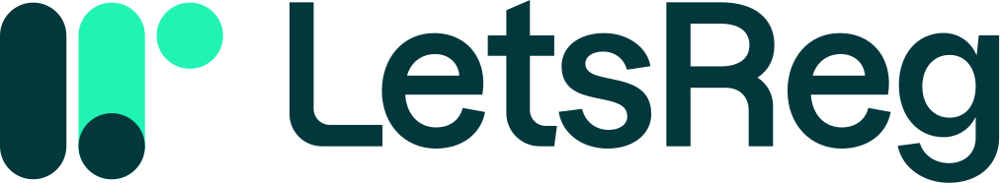

Designing a workspace people want to work in
Design • UX • Product-Led Growth
Design is architecture and ergonomics
Not decoration, but the structure of work.
If a chair squeaks — you fix it.
If an app needs five clicks for a simple task — we fix that too.
Desk vs. Product
- You move a mug so the cable stops catching.
- You adjust your chair to avoid back pain.
- You improve lighting to reduce strain.
LetsReg is our clients' workspace.
Hard Data: McKinsey Design Index
+32%
Top MDI companies achieve 32% higher revenue and 56% faster growth.
The Gap: Why Most Companies Lag Behind
- 40%+ of companies don't talk to end users during development
- 50%+ have no objective way to assess design output
- When asked about their biggest design weakness, 98% of executives' answers mapped to 4 key themes
The 4 Pillars of Design Excellence
Analytical Leadership
Measure design performance with the same rigor as revenue and costs
Cross-functional Talent
Make user-centric design everyone's responsibility, not a siloed function
Continuous Iteration
De-risk by continually listening, testing, and iterating with end-users
User Experience
Break down walls between physical, digital, and service design
Why? Ergonomics = Profit
- Less frustration → Higher retention
- Faster workflows → Lower operational cost
- Better experience → Organic growth
PLG: UX is the frontline
"Product-Led Growth starts where users say:
this is simple, fast, and it works."
Key facts (PLG + UX)
- 97% of users judge a product by first UX impression
- Fastest-growing products "teach themselves" through use
- Top PLG companies run friction audits every 2 weeks
Ownership
If a meeting room always lacks an HDMI adapter — someone must bring it.
In LetsReg everyone influences UX:
- Sales sees where clients get lost
- Support senses user frustration
- Dev sees technical friction
- Design connects the dots and prototypes
Be a user
- Click through LetsReg every day
- Find the "noisy air conditioner" moments
- Report small pains — before clients feel them
The best way to understand the product.
Mini Workshop (10–15 min)
- Open LetsReg → choose one real user action.
- Perform it and observe:
- where you slow down
- what feels unclear
- what could be simplified
- Write down 1–3 improvement ideas.
Goal: create a list of quick wins.
Thank you 🙌
We're building a tool we ourselves want to use.
Questions? Ideas? Suggestions?
Sources & References
McKinsey & Company
The Business Value of Design
The Business Value of Design
Medium (Design Bootcamp)
UX is the Frontline of Product-Led Growth
UX is the Frontline of Product-Led Growth